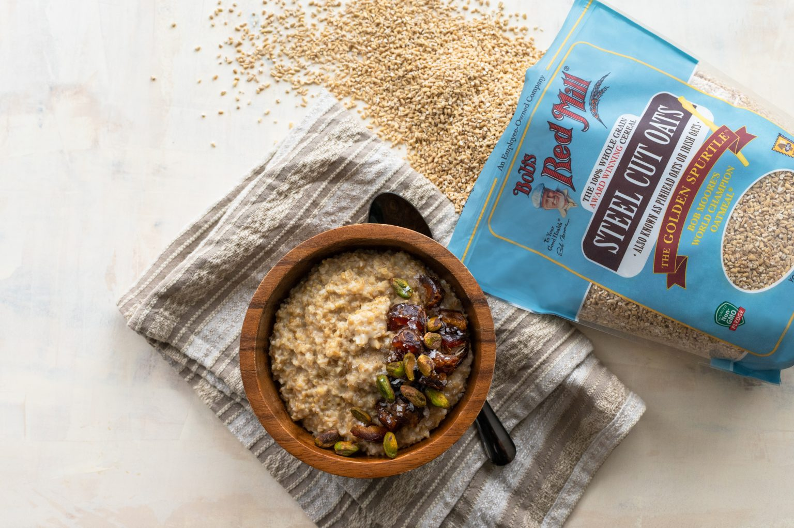

Steel Cut Oats

We call these pinhead oats in Ireland and Great Britain. These style of oats are heartier and chewier than there inferior rolled oats. Once I had pinhead oats with this recipe, I never went back to rolled oats.
Serving: 4
Preperation time: 5 minutes
Cook time: 25 minutes
Ingredients
- 1 cup of steel cut oats
- 1 1/2 cups of almond milk
- 1 1/2 cups of water
- 1/2 teaspoon of cinnamon
- 1/4 teaspoon of salt
Instructions
- Bring 1 1/2 cups water and 1 1/2 cups of almond milk with 1/4 teaspoon salt to a boil then add one cup steel cut oats with 1/2 teaspoon of cinnamon.
- Reduce heat to a low simmer. Cook for 20 - 25 minutes and stir occasionally. Add more liquid if needed!
- Remove from heat and let stand covered for a couple of minutes.